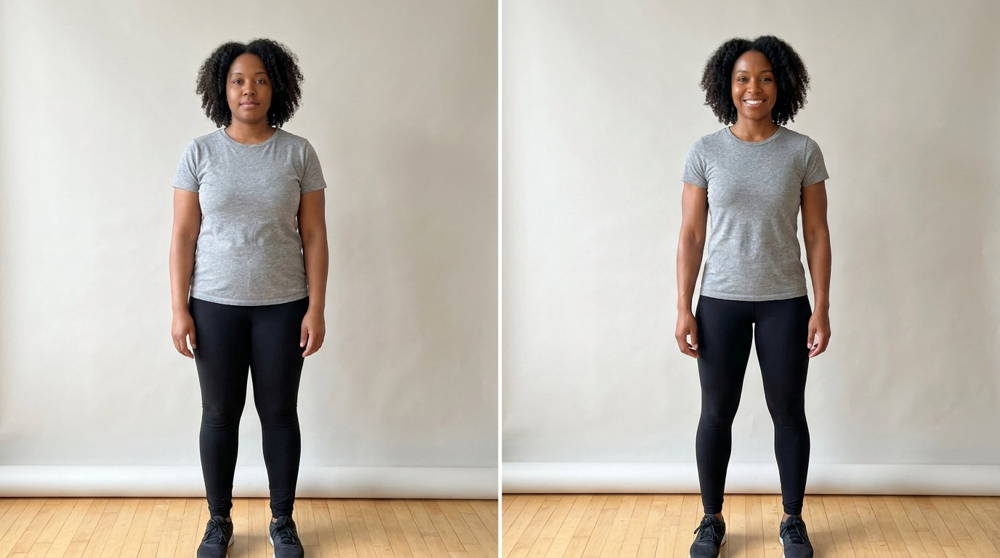
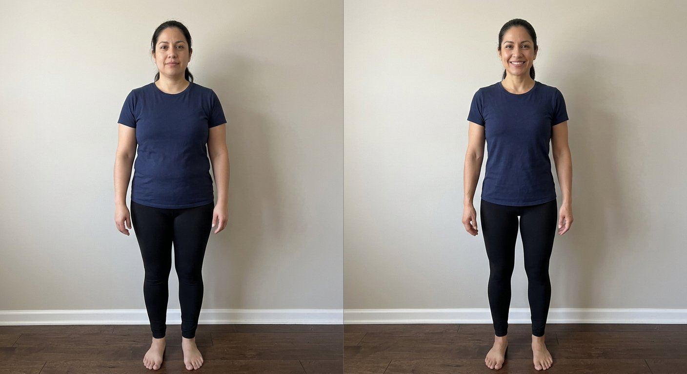

You’ve tried everything
Keto, fasting, the point-counting app. Nothing stuck — because nothing was ever built for your body. That ends here.
1:1 coaching for women · Faith-rooted · Evidence-backed
You’ve done the diets. You’ve deleted the apps. JNFC gives you what no 12-week plan ever has — a real coach and a real plan built around your body, your faith, and the season of life you’re actually in.
Free · 30 minutes · No pressure, ever
Coached by credentials, not vibes
The strategy call
This isn’t a sales trap. It’s a working call — and you’ll leave with value whether we ever work together or not. Here’s exactly what happens:
Who this is for
Keto, fasting, the point-counting app. Nothing stuck — because nothing was ever built for your body. That ends here.
No detox teas. No shame spirals. No “just try harder.” Evidence, encouragement, and a little tough love when you need it.
You want your health to line up with how you’re called to live — stewardship and grace, not guilt and punishment.
Postpartum. Perimenopause. Career, kids, church, life. Your plan has to fit your calendar — not the other way around.
If that stung a little — good. That’s usually the woman we do our best work with.
The results
No filters, no fads — consistent women with a plan built for them.

Placeholder Before After
Placeholder Before AfterSample imagery shown — swap in real client photos and verified results before launch. Individual results vary; these women showed up consistently. So can you.
In their words
Placeholder stills & quotes — replace with real testimonial videos before launch.
Why JNFC
Your health is stewardship, not vanity. We build goals that honor your body and your beliefs — grace over guilt, progress over perfection.
Jordan is an RN and ISSA-certified trainer. That means evidence over trends — and knowing when something needs your doctor, not your coach.
No recycled PDFs. No group-chat disappearing act. A plan built on your labs, your season, your life — with a coach who actually knows your name.
“I got tired of watching women diet themselves into the ground. So I built the thing I wished existed.” — Jordan, founder · RN · ISSA-CPT · CPPC
Questions
Every JNFC plan is built 1:1, so pricing depends on what you need. Most women invest less per month than they’d already been spending on abandoned programs and takeout spirals. You’ll get an exact number on your strategy call — before you commit to anything.
Less than you fear. Workouts run 30–40 minutes, 3–4 days a week. Check-ins take about 10 minutes weekly. If your plan doesn’t fit your real calendar, it’s a bad plan — so we build around your life.
Yes — beginners are JNFC’s favorite people. You’ll never be thrown into an advanced program to “prove” yourself. We meet your body exactly where it is and progress from there.
No. Faith is how Jordan coaches — it shapes the grace-first approach — but you will never be pressured or preached at. Women of every background are welcome and respected here.
You’ll answer a few short questions (about 3 minutes), then pick a time for your free 30-minute strategy call. Within two business days you’ll hear back personally — not an auto-responder. If it’s not a fit, we’ll tell you honestly and point you to someone better suited.
No. No meal plans faxed from 2014, no 1,200-calorie punishment. You’ll learn a sustainable way of eating for your body — plus strength training, sleep, and stress work — so the results outlive the program.
Step 1 of 1
Three minutes, six questions. If we’re a fit, you’ll book your free 30-minute call right after.
Check your inbox — next steps are on the way.
main.js.
’s video goes here.
Embed the real testimonial (YouTube / Vimeo iframe) in main.js.